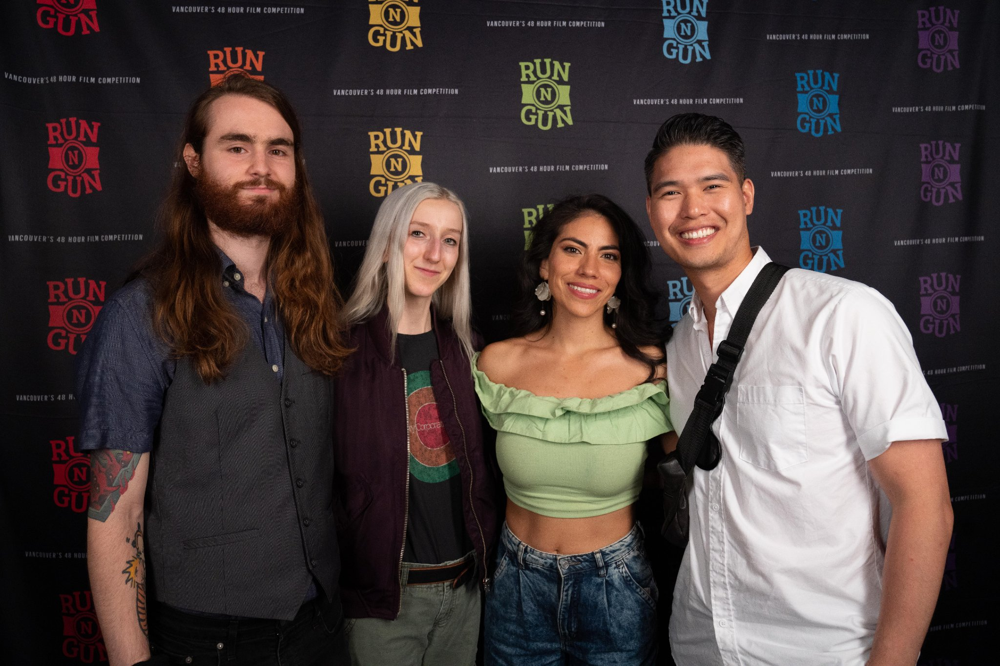

Logan J Charron
Editor, videographer, and musician from Vancouver, Canada.
I became interested in filmmaking when I was a kid in middle school. At the time, YouTube was the new experimental platform and I spent most of my waking hours watching and posting videos with my friends. This was the beginning of my passion for storytelling. I have an expansive imagination and I find that the stories and characters I develop are the best way I can express myself. When I went to college, it was a no-brainer for me to pursue filmmaking and master my skills as a video editor.
I use music as a baseline for my creative visions showcased in my independent films with Dark River Studios. When I listen to a song I picture a story; In my debut film, Sanction, my inspiration came from nordic-folk music which I expressed through a forest-dweller who roams through the trees and encounters an evil spirit. I have to thank my friends and collaborators who helped bring the vision I had for Sanction to life. This project fueled my desire to create and collaborate with other artists. Since then we’ve worked together to establish short films under the name Dark River Studios. Dark River Studios has been a great journey and test of my imagination. I direct, write and edit the films but of course, I couldn’t do it without the help of my friends and fellow artists. Our favourite films to make encompass elements of horror, thriller, drama, and dark comedy. The latest Dark River film titled "Moshpit", was created for Vancouver's Run N Gun 48-Hour Film Competition. Within the span of just 48 hours, my team and I were able to create a chilling atmosphere that rose to the occasion in a death-metal-inspired horror film. Since the festival, we have been working extensively on an extended directors cut that will take the place for the official release.